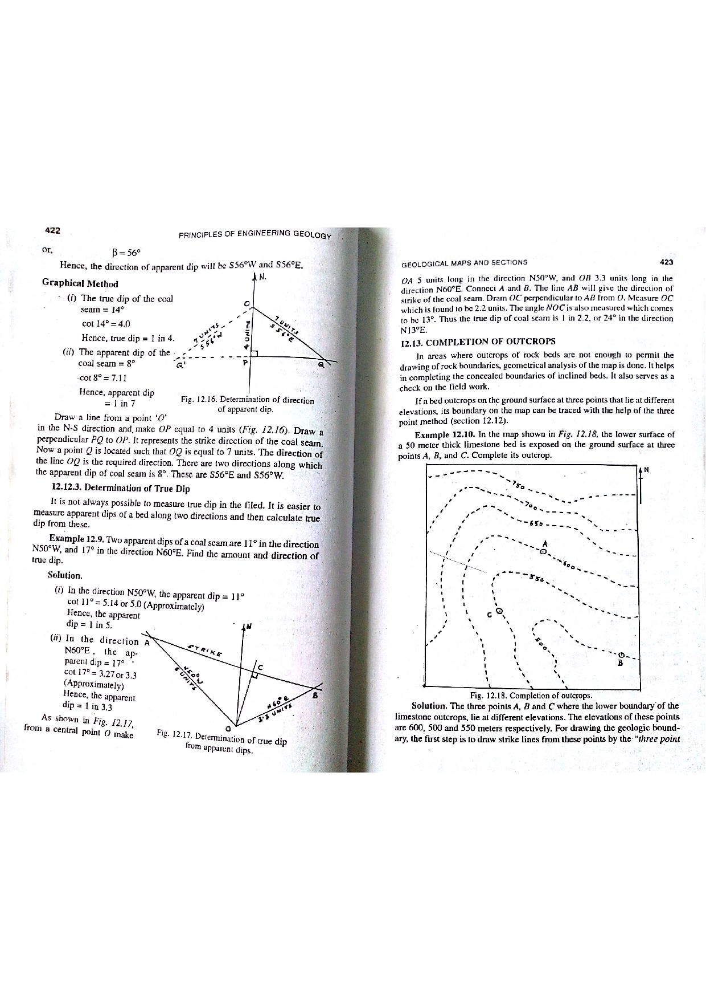

Q133: Spatial Coordinate Dimensionality: Why GIS Represents Geographic Location in 2D Coordinates
In Geographic Information Systems (GIS), digital cartography, and spatial database design, a geographic location on the Earth's surface is fundamentally represented using 2-dimensional planar coordinates $(X, Y)$ (Chang, 2019; Snyder, 1987; Bangar, p. 218).

Why GIS Uses 2-Dimensional Planar Coordinates
Although the Earth is physically a three-dimensional oblate ellipsoid, spatial analysis, map display, and database storage are historically and mathematically anchored in 2-dimensional projected Cartesian coordinate systems:
- Map Projection Transformation: To visualize spherical or ellipsoidal geographic coordinates (Latitude $\phi$, Longitude $\lambda$) on flat computer screens or printed paper maps, mathematical map projections (e.g., Transverse Mercator, Lambert Conformal Conic, Albers Equal Area) are applied to project curved coordinates onto a flat 2D plane:
$$X = f(\phi, \lambda), \quad Y = g(\phi, \lambda)$$
- Computational Efficiency of 2D Euclidean Geometry: In a 2D Cartesian grid ($X, Y$), spatial operations such as distance measurement, buffering, polygon overlay, and area calculation follow simple Pythagorean and Euclidean mathematics:
$$d = \sqrt{(X_2 - X_1)^2 + (Y_2 - Y_1)^2}$$In contrast, calculating geodetic distances across a 3D oblate spheroid requires complex, iterative Vincenty equations or Great Circle spherical trigonometry that would impose massive computational bottlenecks on GIS databases containing millions of features.
- Universal Transverse Mercator (UTM) Standard: The global standard coordinate reference system used in geology, mining, and topographic surveying projects divides the Earth into 60 zones of $6^\circ$ longitude each, assigning 2-dimensional Easting ($X$) and Northing ($Y$) coordinates in meters to every point.

Clarifying 2D, 2.5D, and 3D Representation
In advanced spatial modeling, dimensionality is rigorously classified as follows:
| Dimensional Model | Coordinate Structure | Nature of Representation | Geological Application |
|---|---|---|---|
| 2D GIS (Planar) | $(X, Y)$ or $(\text{Easting, Northing})$ | Foundational location model: Planar geometric primitives (Points, Lines, Polygons) defined on a single reference datum plane. | Standard geological quadrangle maps, mineral tenure polygons, fault traces, borehole collar locations. |
| 2.5D GIS (Surface / DEM) | $(X, Y)$ with $Z = f(X, Y)$ | Every $(X, Y)$ location can possess only one single $Z$-value (elevation). Cannot represent vertical overhangs, caves, or multi-level underground mines. | Digital Elevation Models (DEM), Triangulated Irregular Networks (TIN), topographic contours. |
| True 3D GIS (Volumetric) | $(X, Y, Z)$ | A single $(X, Y)$ coordinate can have multiple distinct $Z$-values (voxels, 3D boundary meshes). | Underground multi-level mine stopes, 3D petroleum reservoir blocks, folded overturned recumbent strata. |
| 4D GIS (Spatio-Temporal) | $(X, Y, Z, t)$ | Dynamic representation incorporating chronological time ($t$). | Earthquake rupture propagation, contaminant plume migration over time. |
Anatomy of the 2D Projected Grid
The UTM system provides a constant conformal 2-dimensional metric Cartesian grid worldwide:
- Zone Division: The Earth between $84^\circ\text{N}$ and $80^\circ\text{S}$ is segmented into 60 longitudinal zones, each $6^\circ$ wide, numbered 1 to 60 eastward from the $180^\circ$ meridian.
- Central Meridian & False Easting: Each zone has a central meridian assigned a False Easting of $500,000\text{ meters}$ ($X$-coordinate). This guarantees that all Easting coordinates within the zone remain strictly positive numbers.
- Equator & False Northing:
- In the Northern Hemisphere, the Equator is assigned a Northing of $0\text{ meters}$ ($Y = 0$).
- In the Southern Hemisphere, the Equator is assigned a False Northing of $10,000,000\text{ meters}$ to eliminate negative numbers.
- (A) 2
- (B) 3
- (C) 4
- (D) 5
In Geographic Information Systems and cartographic theory (Bangar, p. 218; Chang, Ch. 2; Burrough & McDonnell), location is formally and fundamentally defined by 2-dimensional coordinates $(X, Y)$ in a projected Cartesian plane:
- All fundamental vector geometric primitives (points, polyline nodes, polygon boundary vertices) are stored as ordered lists of $(X, Y)$ coordinate pairs.
- Planar projections (such as UTM, State Plane, Polyconic) convert the 3D curved Earth into a 2D Euclidean coordinate space to enable rapid computational calculation of lengths, buffers, overlays, and areas.
- Elevation ($Z$) and time ($t$) are recorded as secondary attribute values attached to the primary 2D horizontal location.
While 3-dimensional coordinates $(X, Y, Z)$ exist in 3D computer graphics, subterranean block modeling, and volumetric voxel engines, standard GIS is built on a 2D planar projection foundation. In conventional GIS, elevation is modeled as a 2.5-dimensional surface where $Z$ is a dependent attribute function of planar location ($Z = f(X, Y)$) rather than an independent spatial coordinate. Thus, "2" is the standard textbook answer.
4-dimensional modeling $(X, Y, Z, t)$ incorporates time as a fourth coordinate dimension for tracking dynamic processes (e.g., magma chamber inflation over time). It is a specialized research niche, not the foundational coordinate dimensionality of GIS.
5-dimensional coordinates have no standard operational meaning in physical GIS location representation.
| Coordinate System Type | Dimensionality | Coordinate Units | Reference Surface | Primary Advantages & Constraints |
|---|---|---|---|---|
| Planar Projected (e.g. UTM) | 2-Dimensional $(X, Y)$ | Meters or Feet (Easting, Northing) | Flat Developable Surface (Cylinder, Cone, Plane) | Universal GIS Standard: Straightforward Euclidean geometry, accurate metric measurements. |
| Geographic (Spherical/Ellipsoidal) | 2-Dimensional $(\phi, \lambda)$ | Angular: Degrees, Minutes, Seconds (or Decimal Degrees) | 3D Reference Ellipsoid (WGS 84, GRS 80) | Global coverage without zone boundaries; distance calculation requires complex spherical trigonometry. |
| Digital Elevation Model (DEM / 2.5D) | 2.5-Dimensional $(X, Y, Z)$ | Planar $(X, Y)$ in meters; $Z$ in meters elevation | Topographic Terrain Surface | Single elevation value per $(X, Y)$; cannot model overhanging cliffs or multi-deck caves. |
| Earth-Centered Earth-Fixed (ECEF) | 3-Dimensional $(X, Y, Z)$ | Linear metric coordinates from Earth's center of mass | Geocentric 3D Cartesian Frame | Used internally by GPS satellite constellations; unsuited for flat 2D cartographic maps. |
Two exploratory mineral boreholes $BH-1$ and $BH-2$ have the following 2D UTM coordinates (Zone 45N, WGS 84, coordinates in meters): $$BH-1: (X_1 = 412500, Y_1 = 2341200), \quad BH-2: (X_2 = 415700, Y_2 = 2345400)$$ Calculate the planar horizontal distance between the two boreholes in meters and kilometers.
1. Calculate coordinate differences: $$\Delta X = X_2 - X_1 = 415700 - 412500 = 3200\text{ m}$$ $$\Delta Y = Y_2 - Y_1 = 2345400 - 2341200 = 4200\text{ m}$$ 2. Apply the 2D Euclidean distance formula: $$d = \sqrt{\Delta X^2 + \Delta Y^2} = \sqrt{(3200)^2 + (4200)^2} = \sqrt{10,240,000 + 17,640,000} = \sqrt{27,880,000}$$ $$d \approx 5280.15\text{ meters} \approx 5.28\text{ km}$$
A major chromite deposit in the Sukinda Valley of Odisha, India, is located at Longitude $\lambda = 85^\circ 48' 30''\text{ E}$. Using the standard formula for UTM zone determination: $$\text{UTM Zone} = \left\lfloor \frac{\lambda_{\text{deg}} + 180^\circ}{6^\circ} \right\rfloor + 1$$ Determine: (a) the UTM Zone number, and (b) the central meridian ($\lambda_0$) of that zone.
1. Convert longitude to decimal degrees: $$\lambda = 85^\circ + \frac{48}{60} + \frac{30}{3600} = 85.80833^\circ\text{ E}$$ 2. Apply UTM zone formula: $$\text{Zone} = \left\lfloor \frac{85.80833 + 180}{6} \right\rfloor + 1 = \left\lfloor \frac{265.80833}{6} \right\rfloor + 1 = \lfloor 44.3014 \rfloor + 1 = 44 + 1 = 45$$ The deposit lies in UTM Zone 45N. 3. Central meridian of UTM Zone $Z$: $$\lambda_0 = (Z \times 6^\circ) - 183^\circ = (45 \times 6^\circ) - 183^\circ = 270^\circ - 183^\circ = 87^\circ\text{ E}$$ The central meridian is $87^\circ\text{ E}$.
A geological field base in UTM Zone 45N has a 2D Easting coordinate $X = 385,400\text{ m}$. Given that the central meridian of the zone is assigned a False Easting of $500,000\text{ m}$: (a) Determine whether the base lies East or West of the central meridian, and (b) calculate its true perpendicular distance from the central meridian in kilometers.
1. Direction relative to central meridian: $$\text{Since } X = 385,400\text{ m} < 500,000\text{ m}, \text{ the base lies strictly } \mathbf{West} \text{ of the central meridian.}$$ 2. Perpendicular distance to central meridian: $$D = 500,000\text{ m} - 385,400\text{ m} = 114,600\text{ meters} = 114.6\text{ km}$$
In the Universal Transverse Mercator (UTM) projection, the central meridian has a scale factor $k_0 = 0.9996$ (to balance scale errors across the $6^\circ$ strip). The point scale factor at a distance $X'$ from the central meridian is given approximately by: $$k \approx k_0 \left[1 + \frac{(X')^2}{2 R^2}\right]$$ where $R \approx 6,371,000\text{ m}$ is the mean Earth radius. Calculate the scale factor $k$ for a survey point located $X' = 150,000\text{ m}$ from the central meridian.
1. Compute the second term: $$\frac{(X')^2}{2 R^2} = \frac{(150,000)^2}{2 \times (6,371,000)^2} = \frac{2.25 \times 10^{10}}{2 \times 4.05896 \times 10^{13}} = \frac{2.25 \times 10^{10}}{8.1179 \times 10^{13}} \approx 0.000277$$ 2. Compute $k$: $$k = 0.9996 \times (1 + 0.000277) = 0.9996 \times 1.000277 \approx 0.99988$$ The scale error is less than $12\text{ parts per } 100,000$ ($0.012\%$).
At a field station located at latitude $\phi = 21^\circ 30'\text{ N}$ ($21.5^\circ$) and longitude $\lambda = 86^\circ 00'\text{ E}$ in UTM Zone 45 (central meridian $\lambda_0 = 87^\circ\text{ E}$), calculate the Grid Convergence angle ($\gamma$) between True Geodetic North and Grid North using the first-order approximation: $$\gamma \approx (\lambda - \lambda_0) \sin\phi$$
1. Compute longitude difference $\Delta \lambda$: $$\Delta \lambda = \lambda - \lambda_0 = 86^\circ - 87^\circ = -1.0^\circ$$ 2. Compute grid convergence $\gamma$: $$\gamma = (-1.0^\circ) \times \sin(21.5^\circ) = (-1.0^\circ) \times 0.3665 = -0.3665^\circ$$ Convert to minutes: $$\gamma = -0.3665 \times 60' = -22.0' = 22'\text{ West}$$ Grid North points $22\text{ arc-minutes}$ West of True Geographic North.
A mountainous copper mining lease on an inclined hillside of uniform dip angle $\theta = 30^\circ$ has 2D planar projected boundaries measuring $1200\text{ m} \times 800\text{ m}$. Calculate: (a) the 2D planar GIS area ($A_{\text{2D}}$) in hectares, and (b) the actual 3D topographic surface area ($A_{\text{3D}}$) taking slope into account.
1. 2D Planar GIS Area: $$A_{\text{2D}} = 1200\text{ m} \times 800\text{ m} = 960,000\text{ m}^2 = 96.0\text{ hectares}$$ 2. Actual 3D Topographic Surface Area: $$A_{\text{3D}} = \frac{A_{\text{2D}}}{\cos\theta} = \frac{960,000\text{ m}^2}{\cos(30^\circ)} = \frac{960,000}{0.8660} = 1,108,512.5\text{ m}^2 \approx 110.85\text{ hectares}$$ Insight: The true 3D surface area is $15.5\%$ greater than the 2D planar GIS area due to terrain relief.
In a 2D raster DEM with a $10\text{ m} \times 10\text{ m}$ grid cell size, four neighboring cell nodes have the following coordinates and elevation values: $Q_{11}(0, 0) = 240\text{ m}$, $Q_{21}(10, 0) = 250\text{ m}$, $Q_{12}(0, 10) = 246\text{ m}$, $Q_{22}(10, 10) = 260\text{ m}$. Using bilinear interpolation, calculate the estimated elevation $Z$ at location $P(4, 6)$.
1. Normalized coordinates within unit cell ($x = 4/10 = 0.4, y = 6/10 = 0.6$): 2. Interpolate in X-direction along bottom ($y = 0$): $$Z(x, 0) = (1 - x) Q_{11} + x Q_{21} = (1 - 0.4)(240) + 0.4(250) = 0.6(240) + 0.4(250) = 144 + 100 = 244.0\text{ m}$$ 3. Interpolate in X-direction along top ($y = 10$): $$Z(x, 10) = (1 - x) Q_{12} + x Q_{22} = (0.6)(246) + (0.4)(260) = 147.6 + 104.0 = 251.6\text{ m}$$ 4. Interpolate in Y-direction: $$Z(x, y) = (1 - y) Z(x, 0) + y Z(x, 10) = (1 - 0.6)(244.0) + 0.6(251.6) = 0.4(244.0) + 0.6(251.6) = 97.6 + 150.96 = 248.56\text{ m}$$ The interpolated elevation at $P(4, 6)$ is $248.56\text{ m}$.
Given an equatorial radius $a = 6,378,137\text{ m}$ for the WGS 84 ellipsoid, calculate the ground displacement in meters corresponding to a change of $\Delta \lambda = 0.0001^\circ$ (approx. $0.36\text{ arc-seconds}$) along the Equator in a 2D planar projection.
1. Circumference of the Earth at the Equator: $$C = 2\pi a = 2\pi \times 6,378,137\text{ m} = 40,075,016.7\text{ m}$$ 2. Ground distance per degree of longitude at Equator: $$D_{\text{deg}} = \frac{40,075,016.7\text{ m}}{360^\circ} \approx 111,319.5\text{ m/degree}$$ 3. Ground distance for $0.0001^\circ$: $$\Delta X = 0.0001^\circ \times 111,319.5\text{ m/deg} \approx 11.13\text{ meters}$$ A coordinate precision of 4 decimal places resolves spatial locations to within $\approx 11\text{ meters}$.